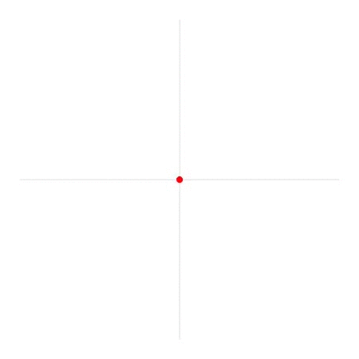
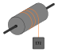
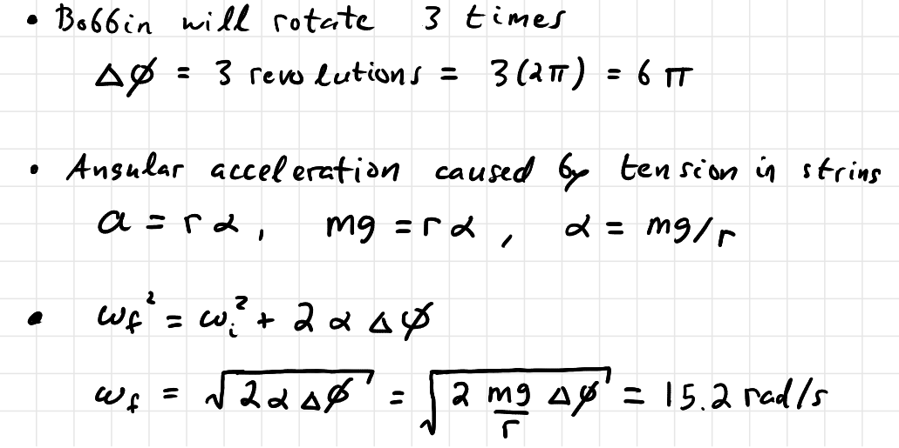

University Physics I

9: Rigid Body Rotation
Rotation about a Fixed Axis
What is a Radian
PQ: Disk Rotating Kinematics
A Blu-ray disk is spinning at $\omega=27.5$rad/s. When you go to eject the disk it slows down at a constant rate of $\alpha=-10.0$rad/s$^2$ to bring it to a stop. How many times has the disk rotated when it finally stops spinning?
PQ: Disk Rotating Kinematics (sol)
$$ \omega_f^2=\omega_i^2+2\alpha \Delta\phi $$ $$ 0=\omega_i^2+2\alpha \Delta\phi \quad \Rightarrow \quad \Delta\phi = \frac{-\omega_i^2}{2\alpha}$$ $$ \Delta\phi = \frac{-(27.5\text{rad/s})^2}{2(-10.0\text{rad/s})} = +37.8\text{rad} $$ $$ = +37.8\text{rad} \frac{1\text{rev}}{2\pi\text{rad}}= 6.02\text{rev} $$PQ: Spinning Bobbin
A string is wrapped three times around a bobbin of radius 4cm and connected to a 25 gram mass. The mass is let go and starts rotating the bobbin. What is the angular velocity of the bobbin when the string fully unwinds?
PQ: Spinning Bobbin (sol)
PQ: $\vec{r}\cdot\vec{v}$
Use the vector dot product to show in circular motion $\vec{r}$ and $\vec{v}$ are always orthogonal.
$$ \vec{r}=r\cos\phi\,\hat{x}+r\sin\phi\,\hat{y} $$ $$ \vec{v}=-r\omega\sin\phi\,\hat{x}+r\omega\cos\phi\,\hat{y} $$PQ: $\vec{r}\cdot\vec{v}$ (sol)
$$ \vec{r}\cdot\vec{v}=(r\cos\phi\,\hat{x}+r\sin\phi\,\hat{y}) \cdot (-r\omega\sin\phi\,\hat{x}+r\omega\cos\phi\,\hat{y} ) $$ $$= -r^2\omega\cos\phi\sin\phi+ r^2\omega\sin\phi\cos\phi $$ $$ = 0 $$ A dot product is always zero only if the angle between the two vectors is $90^\circ$.PQ: Calculate I Point Masses
Consider two point particles, $m_1$=3kg at $x=$0cm and $m_2$=5kg at $x=$10cm. What is the moment of the inertia for the system when $\ldots$
- rotating about an axis through the center of mass?
- rotating about an axis through the origin?